MVP приватного мессенджера
Проект
App Store
Год
2026
Презентация кейса на 2 мин.
Проект
App Store
Год
2026
Презентация кейса на 2 мин.
Задача
Это слова нашего клиента — частного бизнесмена. Вся коммуникация по проекту шла через его менеджера и личного ассистента.
По сути, формат был ближе к digital concierge: решения принимались не для «среднего пользователя», а под его сценарии, требования и привычки.
Discovery
Перевёл запрос клиента в продуктовые требования
| Запрос клиента | Требование к продукту |
|---|---|
| Не знает, кто я | Без регистрации, телефона, имени и email |
| Не знает, о чём я говорю | Без доступа к содержимому чатов и файлов |
| Хочу контролировать безопасность общения | Видны действия собеседника в чате и звонке |
В итоге получился привычный мессенджер с надстройкой в виде усиленной безопасности.
Сначала я проверил, можно ли вообще не проектировать отдельный продукт. Сравнил privacy-first мессенджеры по требованиям, которые мы уже зафиксировали: сервис не должен знать, кто пользователь, и не должен получать доступ к содержимому переписки.
Ближе всего оказался Briar: он не требует привычного профиля, данные хранятся локально, а передача построена вокруг защищённых соединений. По уровню приватности это был реальный вариант, поэтому мы принесли его клиенту как альтернативу собственной разработке.
Клиент отказался: ему нужен был закрытый продукт, которым можно управлять самостоятельно, и собственный визуальный язык. Поэтому готовое приложение осталось референсом, а не решением.
Привычные сценарии мессенджера свёл к трём зонам риска
| Зона риска | Что проверяем |
|---|---|
| Коммуникация |
Добавление контакта
Чаты и файлы
Условия звонка
Системные уведомления
|
| Подключение |
Защищённое соединение
Работа из разных стран
|
| Доверие и контроль |
Статус защиты
Принципы безопасности
Локальные данные
|
Так определил точки, где привычный сценарий мессенджера требует дополнительной защиты.
Я собрал MVP вокруг сценариев, которые заменяли привычное общение на безопасное.
| Что проверяем | Как измеряем |
|---|---|
| Клиент и его бизнес-партнёры остаются скрыты от сервиса | Проверяем ключевые сценарии: для подключения и общения не нужны телефон, имя, email и другие персональные идентификаторы, а сервис не получает доступ к содержимому переписки |
| Новые сценарии безопасности понятны пользователю | На юзабилити-тестах смотрим, проходят ли пользователи без подсказок взаимное QR-подключение и контроль действий собеседника во время звонка. Фиксируем ошибки, повторные действия и шаги, на которых пользователь останавливается |
Сначала я погрузился в контекст сценария: перед нами два человека, которые уже встретились и познакомились. Приложение нужно им не для старта диалога, а для безопасного продолжения общения. Из этого я зафиксировал два ограничения.
| Ограничение | Решение |
|---|---|
| Подключение должно происходить только при личной встрече | Предстояло узнать |
| Способ подключения нельзя передать третьему лицу | Предстояло узнать |
| При подключении нельзя передавать персональные данные | Предстояло узнать |
С этими ограничениями я посмотрел, как эту задачу решают обычные и privacy-first мессенджеры, и выявил четыре варианта.
| Вариант | Что не подходит |
|---|---|
| Номер телефона / username | Требует постоянного идентификатора и позволяет подключиться удалённо |
| Ссылка или код | Можно переслать другому человеку |
| Статичный QR | Подходит для встречи, но его можно сохранить и передать |
| Динамический QR | Работает при личной встрече и теряет актуальность после сохранения |
Под наши ограничения лучше всего подошёл динамический QR: он работает при личной встрече и постоянно обновляется, поэтому сохранённый код нельзя использовать как постоянный способ подключения.
Принцип подключения у обоих пользователей один: встреча происходит офлайн, один человек показывает динамический QR, второй считывает его, а затем приложение запрашивает ответное сканирование для взаимного подтверждения. После этого каждый задаёт контакту локальное имя — и новый диалог появляется в списке контактов.
Ниже — пример полного пути пользователя, который начинает подключение первым.
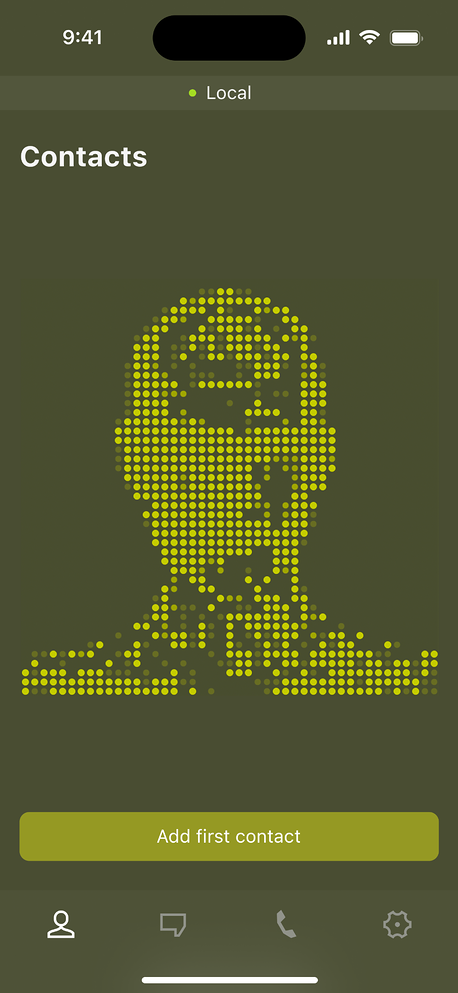
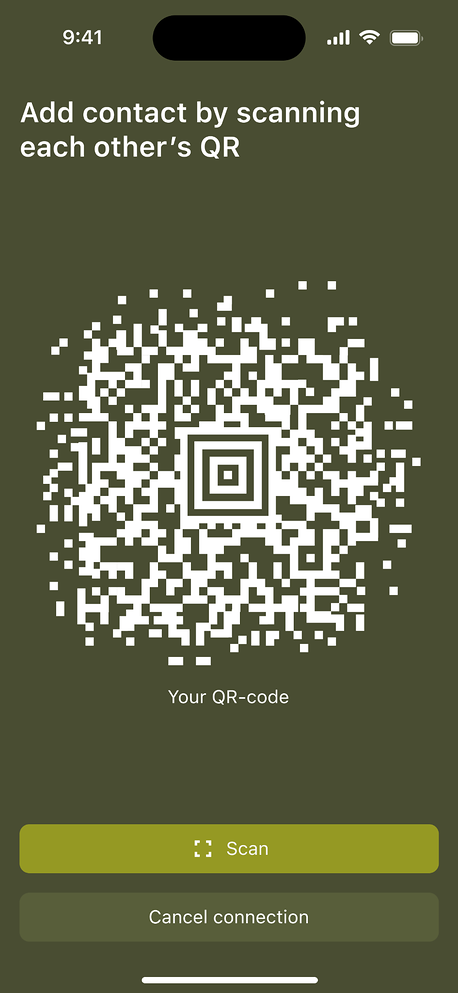
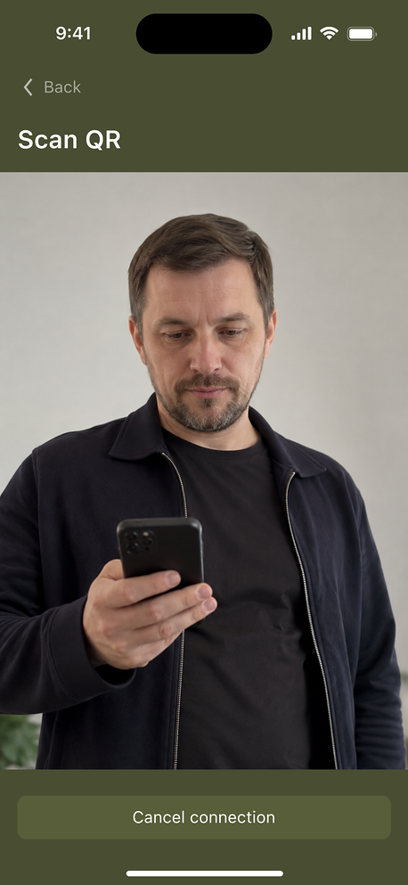
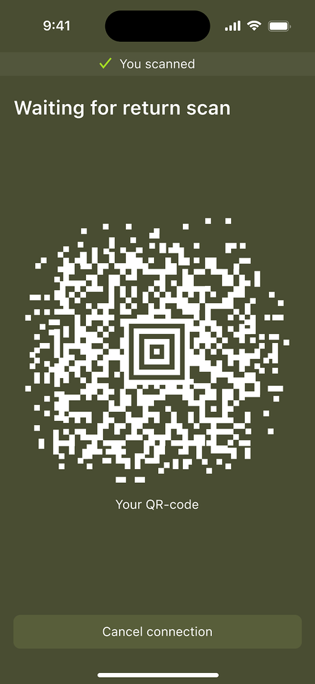
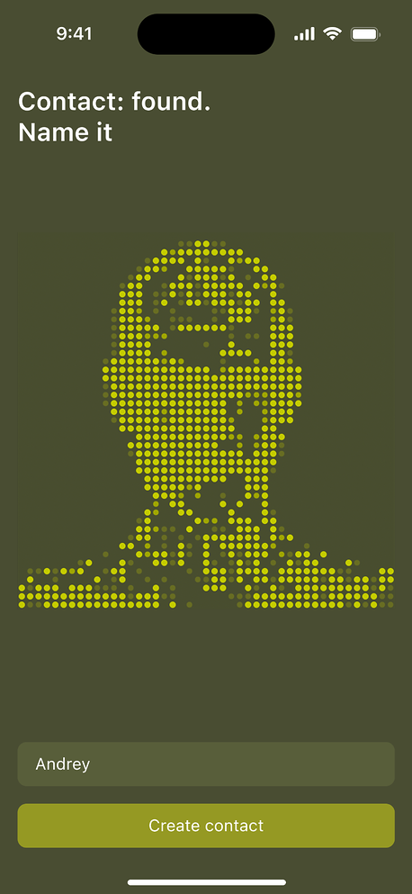
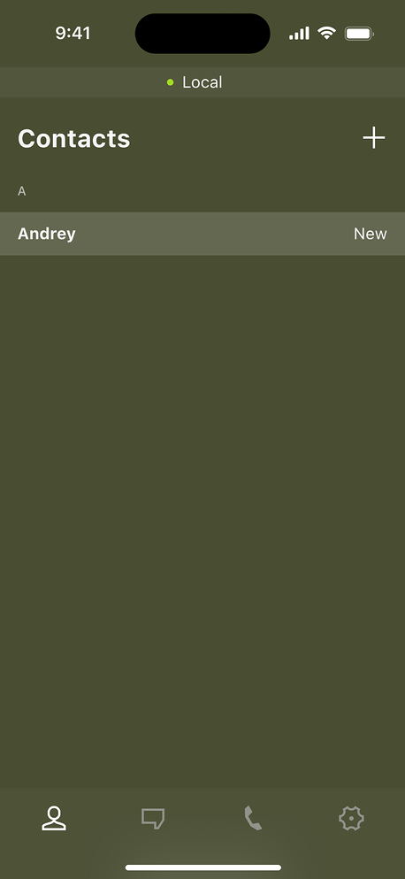
При разборе сценария я нашёл две точки, где безопасность переписки может нарушиться уже на стороне собеседника: он может сделать скриншот или переслать сообщение.
Дальше разобрал, где пользователь должен узнать об этом. Получилось два уровня: внутри конкретного чата — чтобы видеть действие в контексте переписки, и на экране чатов — чтобы заметить событие ещё до открытия диалога.
На этапе анализа конкурентов я уже видел рабочий паттерн: такие действия можно не запрещать, а фиксировать и делать заметными. Поэтому заложил индикаторы и внутри чата, и на уровне списка чатов.
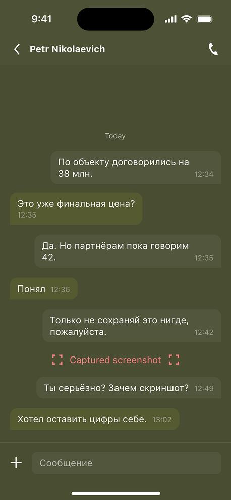
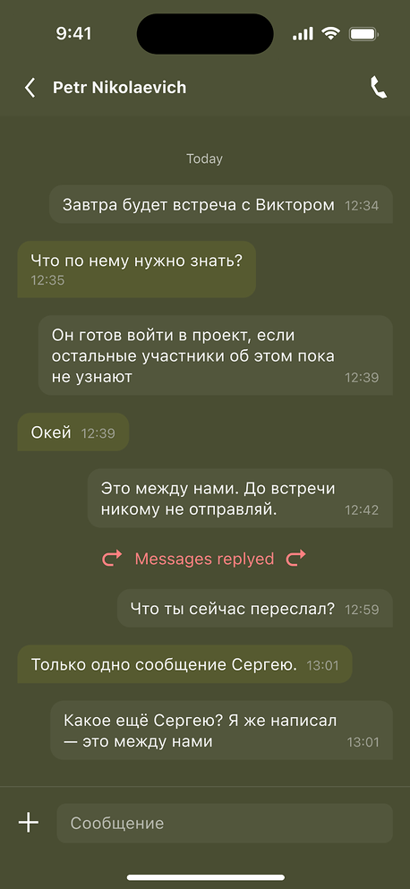
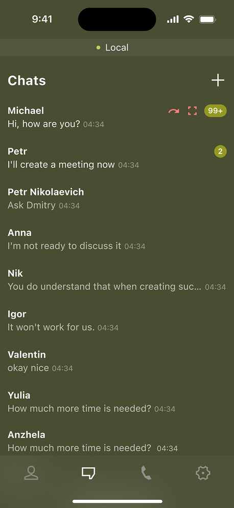
Сначала разобрал, какие действия собеседника могут изменить условия разговора незаметно для второго участника.
| Действие собеседника | В чём риск |
|---|---|
| Включает громкую связь | Разговор могут слышать люди рядом |
| Выключает микрофон | Собеседник может говорить с людьми рядом, а второй участник этого не слышит |
| Подключает Bluetooth-устройство | Разговор может воспроизводиться через внешнее устройство, о котором второй участник не знает |
У конкурентов такого контроля не было — готового паттерна, который можно было бы перенять, я не нашёл.
Дальше я проверил, где эту информацию можно показывать, и столкнулся с ограничением: системный экран звонка iOS нельзя кастомизировать под наши индикаторы.
Поэтому контроль перенесли внутрь приложения: во время звонка там появляется собственный виджет, который показывает состояние инструментов на стороне собеседника.
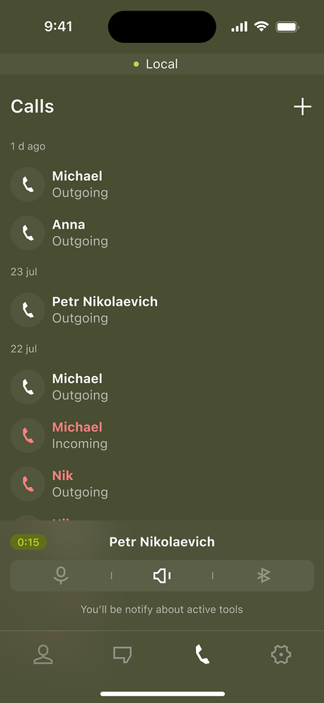
Во время проверки пользовательского пути нашёл ещё одну слепую зону: человек может продолжать ходить по приложению, а на некоторых экранах — например, внутри чата или настроек — виджет звонка не отображается.
При этом собеседник всё ещё может включить громкую связь, выключить микрофон или переключить устройство вывода звука.
Чтобы изменения не проходили незаметно, добавил короткие сообщения поверх текущего экрана — они появляются каждый раз, когда собеседник меняет условия звонка.
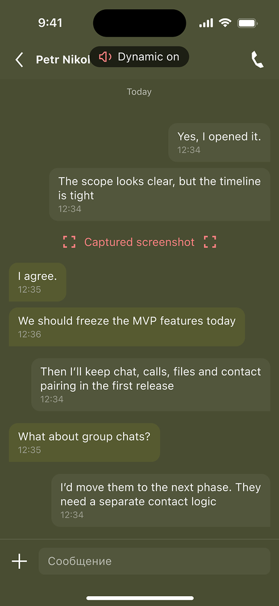
Во время анализа сценариев заметил ещё один канал утечки: системное уведомление может показать имя собеседника и текст сообщения.
Поэтому использовал штатные возможности ОС и дал пользователю контроль над тем, что именно отображается. Чтобы настройки не приходилось проверять вслепую, рядом добавил live-preview — пользователь сразу видит, как будет выглядеть уведомление после изменений.
В MVP настройка действует сразу на все чаты: можно скрыть имя, содержание сообщения или полностью отключить уведомления.
Следующим шагом этот же контроль можно перенести на уровень конкретного собеседника.
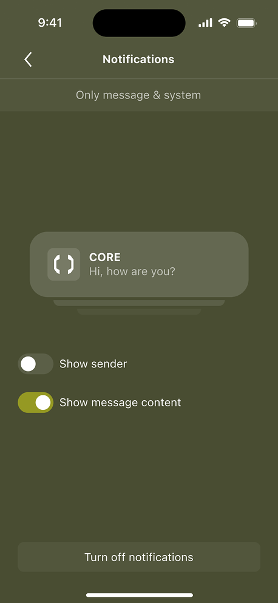
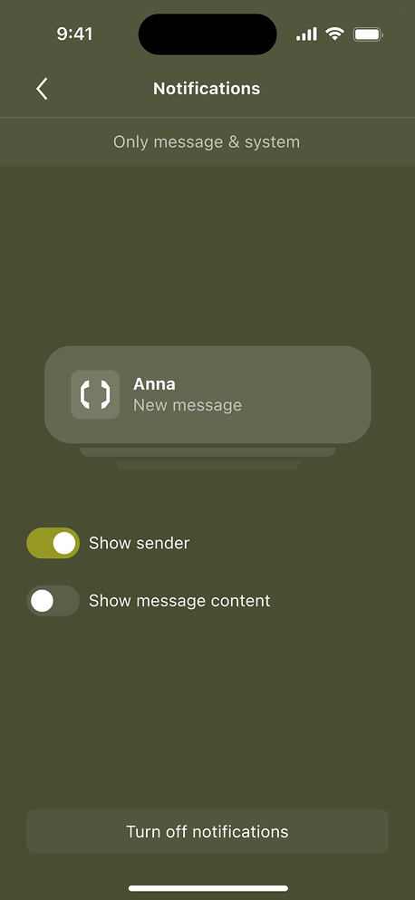
Прокси был базовым слоем сетевой приватности: трафик приложения должен проходить через защищённую точку подключения, а не напрямую с устройства пользователя. Иначе сервис на другой стороне соединения сможет увидеть его реальный IP и часть сетевых метаданных.
Поэтому заложил правило: приложение не должно незаметно переключаться на обычное соединение. Пока прокси работает — пользователь общается как обычно. Если соединение теряется, приложение пытается восстановить его и явно показывает текущее состояние.
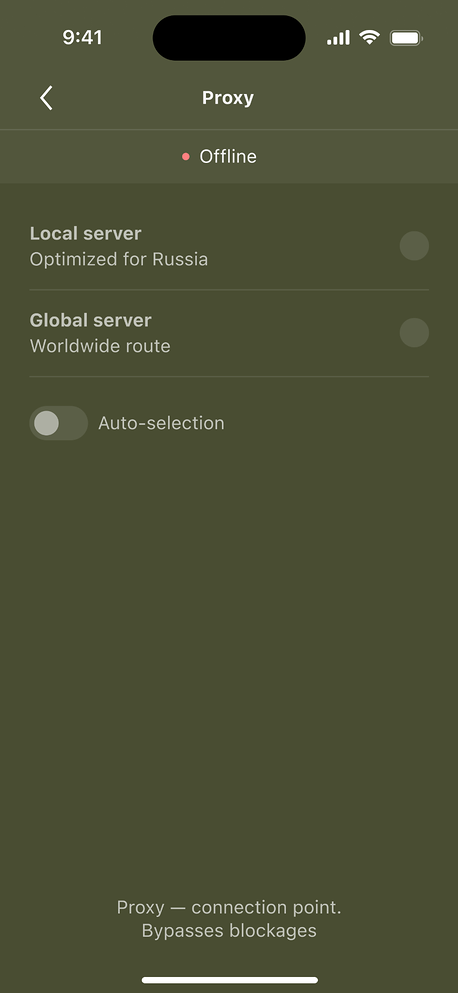
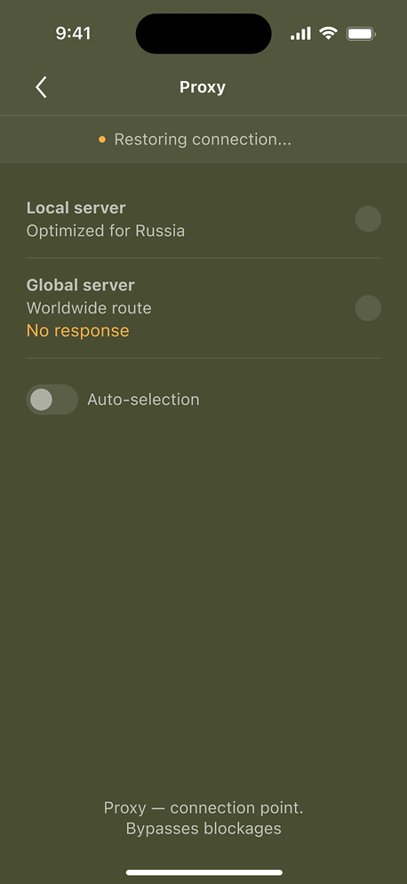
Отдельно продумал негативный сценарий. При потере защищённого соединения пользователь может продолжать ходить по приложению и читать уже доступные данные, но сетевые действия блокируются: нельзя отправлять сообщения, звонить и передавать файлы.
Лучше остановить передачу данных, чем незаметно отправить их в обход защищённого соединения.
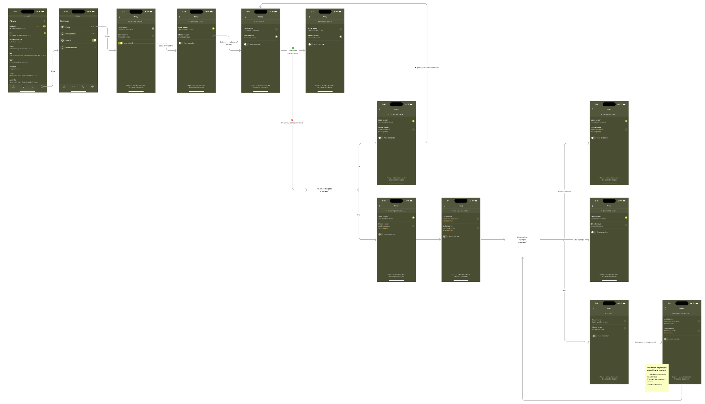
Я изначально не хотел добавлять онбординг в MVP. Основной сценарий начинался с личной встречи: один человек предлагает продолжить общение в приложении, второй устанавливает его и сразу подключается. В такой ситуации новый пользователь скорее захочет быстрее добавить контакт, чем читать несколько вводных экранов.
Я собрал структуру, отталкиваясь от того, что пользователю нужно понять о продукте при первом знакомстве. Выделил три зоны: сначала — что здесь есть чаты и звонки; затем — чем приложение отличается от обычного мессенджера; в конце — как защита работает в основных сценариях.
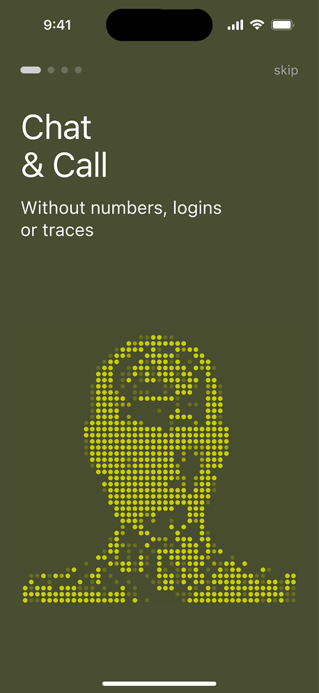
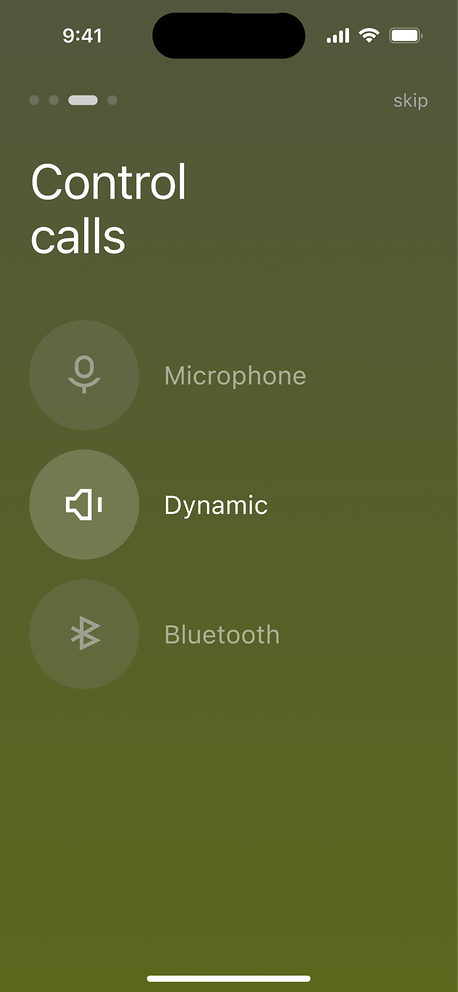
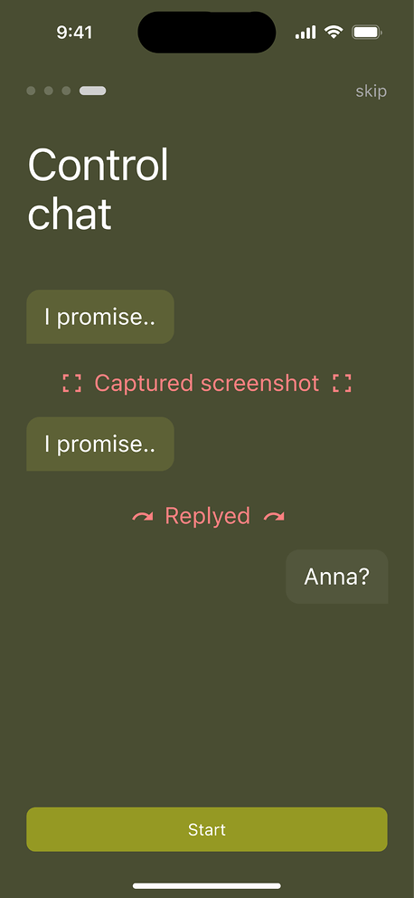
| Что клиенту нужно делать | Где риск в мессенджерах | Что нужно в MVP |
|---|---|---|
| Добавить человека из закрытого круга | Контакт создаётся через номер, username или адресную книгу | Альтернативное решение без персональных данных |
| Вести переписку | Обычный чат раскрывает активность и прочтение | Без индикатора прочтения и статуса online |
| Отправлять документы и фото | Файлы уходят через привычные, но небезопасные каналы | Шифрование содержания чатов |
| Звонить по важным вопросам | Обычный звонок не даёт контроля над условиями разговора | Индикаторы speaker, mute и Bluetooth |
| Контекст | Где риск в мессенджерах | Что нужно в MVP |
|---|---|---|
| Клиент может находиться в России или за рубежом | Один маршрут подключения может быть нестабильным | Proxy |
| Что важно для продукта | Где риск в мессенджерах | Что нужно в MVP |
|---|---|---|
| Приложение передаётся дальше закрытому кругу | Новые пользователи не обязаны верить клиенту «на слово» | Онбординг с принципами защиты и security-лейблы |
| Пользователь хочет понимать, что защита работает | Безопасность выглядит абстрактно | Статус защищённого соединения |
| Пользователь хочет убрать следы устройства | Непонятно, что остаётся после удаления | Удаление локальных данных |
Вместо телефона, username или поиска — один пользователь показывает QR, второй сканирует его камерой. После сканирования новый чат сразу появляется в списке
Показать QR → Сканировать → Чат создан
Никаких персональных идентификаторов и адресной книги: доверие устанавливается между людьми офлайн, приложение только создаёт связь
Если у пользователя нет аккаунта, сервис не может брать имя из профиля
| Варианты | Путь | Риск |
|---|---|---|
| Публичное имя | Пользователь задаёт имя при входе | Сервис получает персональные данные |
| Технический ID | В чате виден набор символов | Непонятно, кто «перед тобой» |
| Имя от собеседника | Человек сам передаёт своё имя | Имя уходит в систему |
| Локальное имя | Пользователь сам называет контакт | — |
Контакт называет сам пользователь. Сервис не получает имя, а пользователь может скрыть реальную связь за нейтральным названием.
Техническое решение согласовывалось с разработкой. Мне было важно понять принцип
| Варианты | Путь | Риск |
|---|---|---|
| Обычное серверное хранение | Сообщения хранятся на сервере | Сервис потенциально видит данные |
| P2P | Устройства общаются напрямую | Сложнее стабильность и доставка |
| Сквозное шифрование | Сообщение шифруется у отправителя и расшифровывается у получателя | — |
Команда разработки выбрала сквозное шифрование. Сообщение закрывается у отправителя, проходит через сервер закрытым и открывается только у получателя.
Задача одна — всегда быть под прокси. Прокси и есть главный уровень защиты
Так, чтобы пользователь всегда оказывался под прокси.
Так, чтобы пользователь всегда понимал состояние соединения.
Здесь было важно не просто показать QR и кнопку скана
А провести каждого участника по сценарию и сразу дать понятную реакцию интерфейса. Иначе пользователь мог бы запутаться: код уже считан или нет, кто делает следующий шаг и с кем сейчас создаётся связь.
В MVP я не стал делать добавление сразу нескольких человек. Правило получилось простым: два QR — одно подключение.
Брендинг
До работы с цветом, типографикой и графикой зафиксировали четыре границы для визуального языка.
| Что задал клиент | Что это значит для дизайна |
|---|---|
| Military | Взять собранность и тактический характер направления, не превращая интерфейс в буквальную военную стилизацию. |
| Не второй Telegram | Не повторять визуальный язык привычных мессенджеров — продукту нужен собственный характер. |
| Партнёры в других странах | В дальнейшем продукт станет мультиязычным — типографика должна поддерживать разные языки и письменности. |
| iOS и Android | Типографика и визуальная система должны одинаково уверенно работать на обеих платформах. |
Military должно считываться через тон и детали, а продукт — иметь собственный характер.
Разложил заданное направление на визуальные принципы.
| Признак | Что можно взять в продукт |
|---|---|
| Тёмная палитра | Графит, хаки, оливковый, песочный, приглушённые акценты |
| Тактическая графика | Сетки, координаты, схемы, маркеры, технические линии |
| Собранная композиция | Больше структуры и контроля |
| Жёсткая иконка | Простые формы, углы, контур, без мягкой дружелюбности |
Military стало не декором, а направлением для визуального кода — тёмного, точного и собранного.
Хотел добавить в интерфейс анимацию, чтобы визуальный язык ощущался современнее и технологичнее.
| Ограничение | Что это значит для графики |
|---|---|
| Мобильное приложение | Графика должна мало весить |
| Анимация | Должна хорошо работать в движении и собираться средствами кода |
| Military-направление | Нужен технический, системный характер |
Одним из подходящих направлений стала символьная графика — знакомая по визуальному языку «Матрицы» и Ghost in the Shell. Она понравилась клиенту.
Запуск
К запуску MVP мы не дошли — проект остановился раньше. Поэтому проверить продуктовые метрики, которые зафиксировали на этапе Discovery, не успели.
Откройте сайт на компьютере — так макеты сохранят все детали.